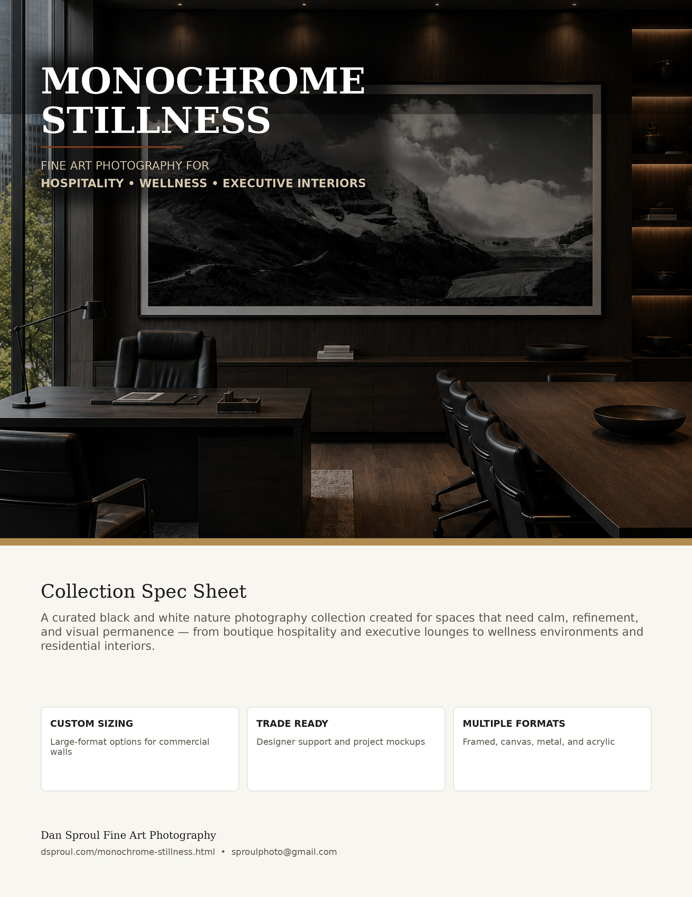

Monochrome Stillness
Restrained black and white landscapes selected for architectural calm, quiet luxury interiors, wellness spaces, boutique hospitality, and rooms where artwork should feel timeless, grounded, and intentional.
Silence, restraint, atmosphere, and architectural calm.
Monochrome Stillness brings together black and white nature photography by Dan Sproul with a focus on atmosphere, reflection, mountain forms, mist, and quiet visual rhythm. The collection is built for interiors where artwork needs to support the emotional tone of a room without overpowering the architecture.
These pieces work especially well in hospitality lounges, wellness spaces, healthcare corridors, residential living rooms, executive offices, and boutique environments where designers need artwork that feels sophisticated, grounded, and easy to specify across multiple rooms.
Built for spaces where restraint matters.
Hospitality
Guest corridors, spa lounges, boutique suites, reception walls, and quiet destination-inspired spaces.
Healthcare
Waiting areas, wellness corridors, patient rooms, therapy spaces, and restorative environments.
Residential
Living rooms, bedrooms, entryways, reading areas, and calm gallery-style interiors.
Commercial
Executive offices, conference rooms, reception areas, and refined professional spaces.
Available for professional interiors and large-scale artwork programs.
Architectural settings for monochrome work.
Large-format monochrome landscapes create a calm focal point in interiors shaped by texture, indirect light, natural materials, and negative space.


Download the Monochrome Stillness designer spec sheet.
A concise PDF overview for designers, art consultants, hospitality teams, and commercial interiors. Includes the collection direction, use cases, presentation options, and visual examples for large-format black and white nature photography in refined interiors.

Selected monochrome works for interiors.
Each image links to available print options including canvas, metal, acrylic, framed paper, and custom sizing through Dan Sproul’s print storefront.
.jpg)


Monochrome artwork designed to anchor architectural spaces.
Large-scale monochrome landscape photography selected for executive interiors, hospitality lobbies, wellness environments, and architecturally grounded commercial spaces.
This scale example shows how a single commanding black and white piece can create a focal point without adding visual noise.

A cohesive visual system for multi-room projects.
This collection is meant to function as a calm, cohesive visual system rather than a set of unrelated prints. Monochrome work can move between rooms, floors, and project phases while maintaining a consistent emotional tone.
- Available in large-format sizes for statement walls.
- Works across hospitality, wellness, healthcare, residential, and office interiors.
- Custom sizing available for project-specific walls and niches.
- Trade pricing and mockup support available for designers and stagers.
A quiet process for specifying monochrome artwork.
Designed as a practical resource for designers, art consultants, hospitality teams, wellness environments, and residential projects that need cohesive visual direction.
Share Project Details
Room imagery, dimensions, inspiration references, floor plans, or notes on the desired atmosphere.
Receive Artwork Direction
Curated monochrome recommendations based on atmosphere, scale, architecture, lighting, and project use.
Review Placement Mockups
Scaled previews showing artwork proportion, framing direction, placement, and alternate image options.
Finalize Specification
Available in framed, canvas, acrylic, metal, and oversized statement formats for refined interiors.
Designed for calm, restorative, and architecturally grounded spaces.
Monochrome Stillness was intentionally curated for interiors where artwork should contribute to atmosphere rather than visual noise. Black and white landscape photography naturally works within quiet luxury environments because it emphasizes texture, shape, light, reflection, and spatial calm instead of relying on heavy color palettes or trend-driven styling.
These monochrome nature photographs pair especially well with modern hospitality interiors, wellness-focused spaces, healthcare environments, executive offices, boutique hotels, mountain lodges, and refined residential projects built around natural materials and restrained palettes. Wood, stone, linen, plaster, leather, and soft neutral finishes allow monochrome artwork to become part of the architecture itself.
For healthcare and wellness spaces, calming landscape photography can help soften sterile environments while maintaining a sophisticated, contemporary appearance. Mist, reflection, forests, mountains, and water imagery create visual depth without overwhelming patient rooms, corridors, waiting areas, or restorative environments.
Large-format monochrome statement pieces also work exceptionally well in executive offices, conference rooms, hospitality lounges, and reception spaces where designers need artwork that feels timeless, elevated, and cohesive across multiple rooms. Rather than competing with interiors, these works reinforce stillness, atmosphere, and architectural balance.
Black and white landscape photography for quiet luxury interiors.
Monochrome Stillness was curated for designers, art buyers, and collectors looking for black and white landscape photography that feels calm, architectural, and lasting. The collection includes mountain reflections, misty forests, glacial valleys, quiet lakes, waterfalls, and atmospheric nature scenes selected for their ability to support refined interiors.
Rather than relying on color as the main design element, these photographs emphasize shape, shadow, texture, reflection, and tonal balance. That makes them especially useful in spaces with natural wood, stone, plaster, linen, leather, warm neutrals, and minimalist architecture.
For hospitality and commercial interiors, monochrome photography can create continuity across multiple spaces while still giving each room a distinct focal point. For residential interiors, these works bring depth and calm without competing with furniture, lighting, or architectural finishes.
All selected works are available as fine art prints through Dan Sproul’s print storefront, with format options suited for both personal collecting and interior design projects.
Common questions about black and white artwork for interiors.
Where does black and white landscape photography work best?
Monochrome landscape photography works well in interiors where the artwork should feel calm, architectural, and timeless, including executive offices, hospitality lounges, wellness spaces, healthcare corridors, bedrooms, and quiet living rooms.
Can these pieces be ordered in custom sizes?
Yes. Many works can be ordered in standard or custom sizes depending on the wall, room scale, and selected print format.
Do you provide mockups for designers?
Yes. Designers and buyers can send a room photo or project details to request artwork direction, scale suggestions, and simple placement mockups.
Which formats are best for commercial spaces?
Framed paper works well for refined interiors, while metal and acrylic are strong options for hospitality, healthcare, and high-traffic commercial spaces.
Additional curated art directions.
Continue through atmospheric collections designed to support larger interior projects with quiet, cohesive visual systems.